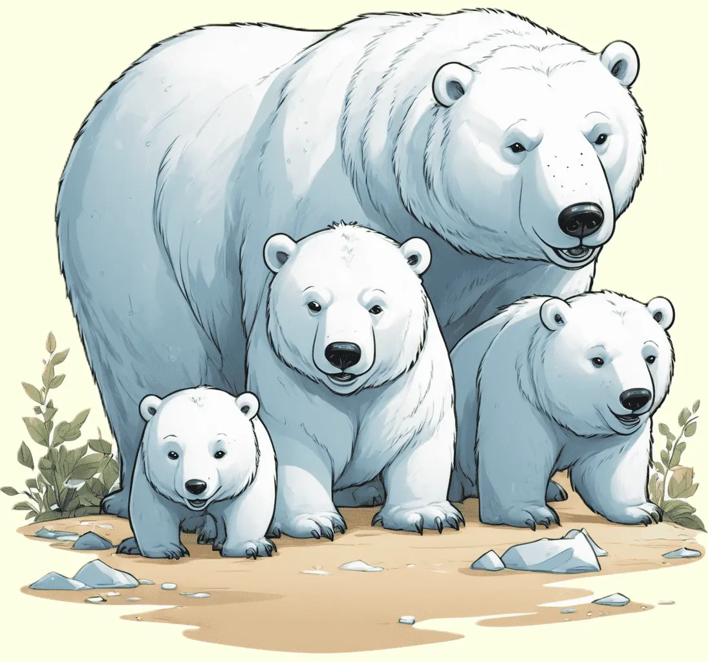

Der Eisbär, ein faszinierender Jäger der Arktis, beeindruckt mit seinem weißen Fell und seiner Anpassung an die eisige Umgebung.
Erkunde die spannende Welt dieses majestätischen Raubtiers und erfahre, wie es in den eisigen Regionen des Nordpols lebt.

Herrscher der arktischen Gefilde
Eisbären, auch als Polarbären bekannt, sind majestätische Raubtiere, die in den eisigen Regionen der Arktis beheimatet sind. Mit ihrem dichten, weißen Fell und kräftigen Körperbau sind sie perfekt an das Leben in den kalten und schneebedeckten Landschaften angepasst. Ihr charakteristisches Erscheinungsbild macht sie leicht erkennbar, während sie über das Packeis streifen und nach Nahrung suchen. Eisbären sind hervorragende Schwimmer und können große Distanzen im eisigen Wasser zurücklegen, um Robben, ihre Hauptbeute, zu jagen. Mit ihren kräftigen Pranken und scharfen Krallen durchbrechen sie die Eislöcher, um an ihre Beute zu gelangen.
Eisbären sind Einzelgänger und durchstreifen weite Gebiete auf der Suche nach Nahrung und geeigneten Fortpflanzungspartnern. Im Sommer, wenn das Packeis schmilzt, können sie auf Landgebieten wandern und auch pflanzliche Nahrung zu sich nehmen. Fortpflanzung erfolgt meist auf dem Packeis, wo die Weibchen Höhlen graben, um ihre Jungen, die sogenannten Eisbärkinder, zur Welt zu bringen. Das Überleben der Eisbären ist stark mit dem Zustand der arktischen Lebensräume verbunden, und sie gelten als gefährdete Art aufgrund des Klimawandels und des damit verbundenen Rückgangs des Packeises.
Überlebenskünstler der Kälte
Eisbären haben beeindruckende Anpassungen an das Leben in der extremen Kälte entwickelt. Ihr dichtes Fell wirkt nicht nur als effektiver Isolator, sondern hat auch eine weiße Farbe, die ihnen beim Schleichen auf Beutetiere im Schnee hilft. Ihre Fettreserven dienen als Energiespeicher, um die mageren Zeiten zu überstehen, wenn Nahrung knapp ist. Die Ohren der Eisbären sind klein und rund, um Wärmeverlust zu minimieren, während ihre breiten Pfoten ihnen helfen, auf dem Eis zu balancieren und beim Schwimmen effizient voranzukommen.
Eisbären sind bedrohte Tiere, und ihr Schutzstatus ist international anerkannt. Die Hauptbedrohung für ihre Populationen ist der Verlust ihres Lebensraums aufgrund des schwindenden arktischen Packeises aufgrund des Klimawandels. Schutzmaßnahmen, wie die Schaffung von Schutzgebieten und Bemühungen zur Reduzierung des CO2-Ausstoßes, sind entscheidend, um das Überleben dieser faszinierenden Raubtiere zu sichern. Eisbären sind nicht nur faszinierende Bewohner der Arktis, sondern auch Botschafter für den Schutz empfindlicher Ökosysteme vor den Auswirkungen des Klimawandels.